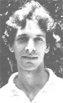
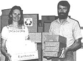

It's generally agreed that the practice of hatha-yoga can improve flexibility and overall health, but the students of instructor Gary Kraftsow often have a more immediate goal: relief from pain.
Gary has earned a reputation on the Hawaiian island of Maui as a person to turn to when doctors can't help. Kraftsow believes that "people should be educated to know they are largely responsible for their own conditions." Although he is in no way opposed to doctors, the 28-year-old teacher thinks that folks should be aware that there are "alternatives to being dependent on medical doctors and chiropractors for treatment of chronic problems."
Kraftsow, a graduate of New York's Colgate University, has studied in India under renowned yogi T.K.V. Desikachar. He has recently completed his master's degree with a thesis on yoga and health.
Gary works with multiple sclerosis patients, asthma sufferers, and stroke victims, but the majority of his students are plagued by spinal problems that have not responded to conventional treatment. Although Kraftsow is not a miracle worker, satisfied students insist that his instruction has made a world of difference for them. Former invalids who are able to walk again-or even dance-are thanking Gary ...not for healing them, but for teaching them to heal themselves.- Bonnie Mandoe.
Last January, Maya Gillingham, Jody Lester, and John Burt embarked on an eight-week tour that gave some 3,600 students across the country an opportunity to share their feelings about growing up in a nuclear age. The three are members of Changing the Silence, a group affiliated with the Student Teacher Organization to Prevent Nuclear War (STOP).
Maya and Jody, teenage students from Massachusetts, along with John, an independent arts producer, took their program of drama, dance, and song to young people in nine U.S. cities. Included in the program was a videotape of Massachusetts high school students performing a dramatic piece of their own creation. The intention of the tour-which developed from a "mere summer thought indulged in by a few people"-was to communicate hope to a nuclear-anxious generation and to inspire people to work toward peace.
The presentation of the touring trio and the discussions of war and peace that followed evoked varied responses from the young people involved. But for many, the experience brought home the need to "change the silence." As one student commented, "It is our future we are talking about ...and our responsibility to protect it."- DM.
John and Carol Magee are dedicated to helping people translate environmental concern into action. Carol has worked for the Michigan legislature's Senate Environmental Committee and started a local Sierra Club group. John has worked for nature centers, teaching folks to appreciate and respect the natural world.
In January of 1983, recognizing the need to increase the availability and use of recycled paper, the couple started Earth Care Paper Company. The Magees, each of whom has a bachelor's degree in environmental education, point out that 17 trees must be killed for every ton of new paper produced. Recycling not only greatly reduces this waste but also saves energy: The manufacturing process for recycled paper uses only about half as much energy as does that for new paper.
Unfortunately, a mere 5% of all printing and office paper is made from recycled fiber. Lack of consumer demand has been cited as the reason for this low percentage, and so John and Carol are trying to convince organizations and individuals of the need to choose the ecologically superior product.
By educating the public and making attractive recycled paper readily available, the Magees are working hard to change the "American waste ethic." They're hoping that society will come to view "wastepaper" not as a burden, but as a resource. (For more information or a free catalog, write Earth Care Paper Company, 325 Beech La., Harbor Springs, MI 49740.) -DM.
Biodynamic agricultural consultant PETER ESCHER died last May 19. A living spirit of the garden, elfish Mr. Escher often advised-and charmed-MOTHER'S Eco-Village gardeners, and provided much of the information for this magazine's article on biodynamics in issue 86. Most important, he helped hundreds of people create truly living soil... and thus farm and garden successfully, as well as ecologically.
Always a determined individual"-Don't try biodynamic methods," he told us, "really use them! There are too many putterers in the world already!"-Peter knew when his years of illness were reaching their end. His doctors told him he was recovering, but Peter declared otherwise ...and at 8:30 PM, he took a deep breath and died.-PS.
Last June 5, in recognition of his work as a musical emissary for endangered species, jazz musician PAUL WINTER received an award from the United Nations Environment Programme. Winter was praised as a "conceptual composer" who has given "voice to the sounds of nature in his innovative environmental music."
Comedian PHYLLIS DILLER is the honorary chairperson of the Council for Better Hearing and Speech and serves as the group's chief media spokesperson. Phyllis, who was the victim of a sudden hearing loss which was corrected medically, is carrying a message of hope to those suffering from hearing and speech problems.-DM.
|
 |
 |
|